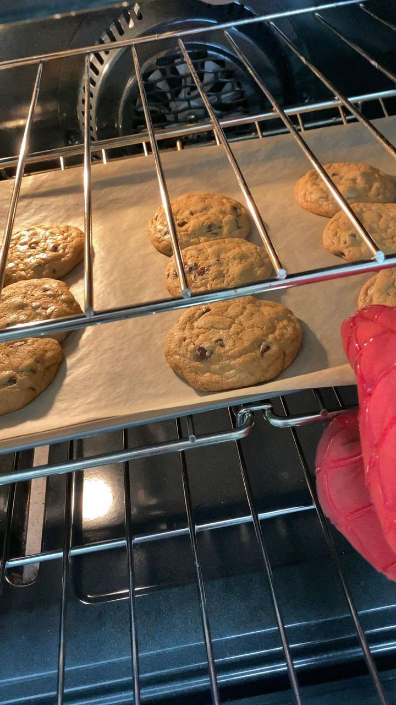
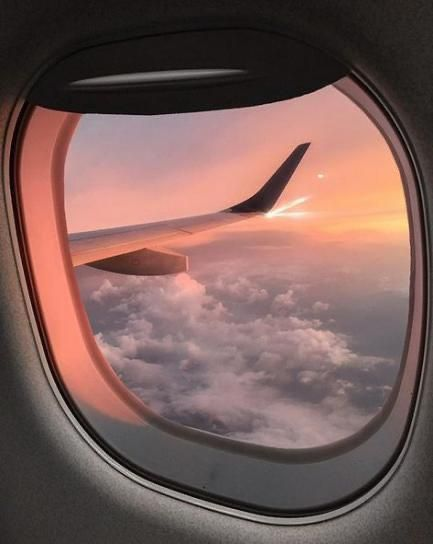

WATCHING KDRAMA
I really love to watch kdrama. This is because K-Dramas usually present creative and brilliant twists. The mystery that drives the show is always interesting.

I have other hobbies, no doubt, but none can compare to my love for baking. I baked my first cheesecake for the family and got plenty of positive feedback from my mum, sisters, and my dad too.
BAKING
I have other hobbies, no doubt, but none can compare to my love for baking. I baked my first cheesecake for the family and got plenty of positive feedback from my mum, sisters, and my dad too.

My favorite hobby is travelling. I like all kinds of travel such as by car, by train, and by plane. Usually, I travel with my family or with my friends. Most of all I like to travel by car and spend a little time at different places.